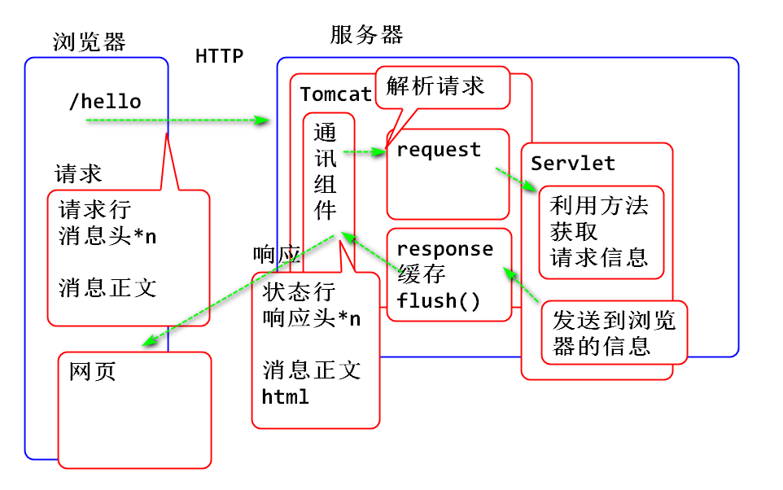
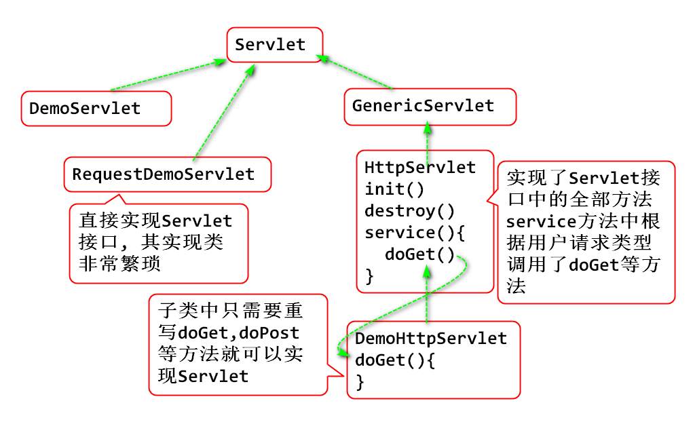
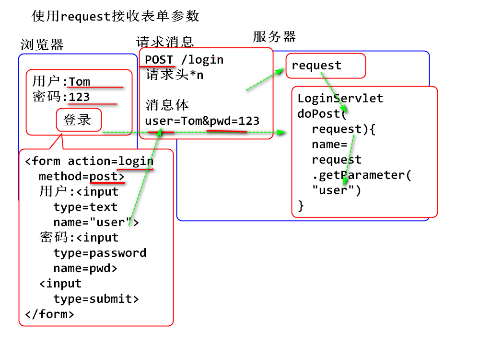

请求与响应的原理:

HttpServletRequest 简称 request 对象, 其父类型是 ServletRequest
案例:
创建Servlet类:
public class RequestDemoServlet
implements Servlet{
public void service(
ServletRequest request,
ServletResponse response)
throws ServletException, IOException {
//由于getMethod方法是HttpServletRequest对象的方法
//所以需要将ServletRequest对象强制转型才能调用
HttpServletRequest req=
(HttpServletRequest)request;
//获取请求行中的请求方式(GET/POST)
String method=req.getMethod();
//获取请求行中的 URI
String uri = req.getRequestURI();
//获取请求行中的HTTP版本
String http = req.getProtocol();
System.out.println(method+" "+uri+" "+http);
//获取请求头中的信息
String host=req.getHeader("Host");
String ua=req.getHeader("User-Agent");
System.out.println(host);
System.out.println(ua);
//获取全部的请求头信息:
//Enumeration 与 Iterator 功能相同
Enumeration<String> em=req.getHeaderNames();
//em.hasMoreElements() 与 it.hasNext() 相同
//em.nextElement(); 与 it.next() 相同
while(em.hasMoreElements()) {
String name=em.nextElement();
System.out.println(
name+":"+req.getHeader(name));
}
response.setContentType("text/html");
response.getWriter().println("OK");
}
public void destroy() {
}
public ServletConfig getServletConfig() {
return null;
}
public String getServletInfo() {
return null;
}
public void init(ServletConfig arg0) throws ServletException {
// TODO Auto-generated method stub
}
}
配置web.xml
<servlet>
<servlet-name>req</servlet-name>
<servlet-class>day02.RequestDemoServlet</servlet-class>
</servlet>
<servlet-mapping>
<servlet-name>req</servlet-name>
<url-pattern>/request-demo</url-pattern>
</servlet-mapping>
HttpServletResponse 简称Response 其父类型是 ServletResponse
案例:
编写Servlet类
public class ResponseDemoServlet
implements Servlet{
public void service(
ServletRequest request,
ServletResponse response)
throws ServletException, IOException {
//为了调用子类型的方法, 先进行类型转换
HttpServletRequest req=
(HttpServletRequest)request;
HttpServletResponse res=
(HttpServletResponse)response;
//利用response对象, 处理对用户浏览器的响应
//设置响应状态码, 默认状态码就是200
res.setStatus(200); //400 500 302 等
//设置响应头, 设置UTF-8支持中文
res.setContentType("text/html; charset=utf-8");
String str = "<html><body><h1>"
+ "今天天气不错!"
+ "</h1></body></html>";
byte[] bytes = str.getBytes("utf-8");
//设置消息正文长度
res.setContentLength(bytes.length);
//添加一个自定义的响应头
res.setHeader("msg", "Hello World!");
//发送消息正文
res.getOutputStream().write(bytes);
//将response中的信息刷出, 反馈到浏览器
//如果不调用这个方法, Tomcat会自动调用!
res.flushBuffer();
}
public void destroy() {
}
public ServletConfig getServletConfig() {
return null;
}
public String getServletInfo() {
return null;
}
public void init(ServletConfig arg0) throws ServletException {
}
}
配置 web.xml
<servlet>
<servlet-name>res</servlet-name>
<servlet-class>day02.ResponseDemoServlet</servlet-class>
</servlet>
<servlet-mapping>
<servlet-name>res</servlet-name>
<url-pattern>/response-demo</url-pattern>
</servlet-mapping>
测试: 检查浏览器中收到的响应头信息, 是否包含自定义响应头
Response提供了更加简便的API, 可以替代如上的API:
案例:
编写Servlet类
public class ResponseDemo2Servlet
implements Servlet{
public void service(ServletRequest request,
ServletResponse response)
throws ServletException, IOException {
HttpServletRequest req =
(HttpServletRequest) request;
HttpServletResponse res =
(HttpServletResponse) response;
//1 响应状态码 200 时候可以不设置, 默认就是200
//2 设置ContentType响应头, 通知浏览器正文内容和编码
res.setContentType(
"text/html;charset=utf-8");
//3 获取 PrintWriter 对象, 字符流, 封装字符
// 的编码功能. 按照ContentType设置编码utf-8
PrintWriter out = res.getWriter();
//4 设置消息正文内容
out.print("<html><body><h1>"
+ "简单版本"
+ "</h1></body></html>");
//PrintWriter 会自动处理文字编码,设置ContentLength
}
public void destroy() {
}
public ServletConfig getServletConfig() {
return null;
}
public String getServletInfo() {
return null;
}
public void init(ServletConfig arg0) throws ServletException {
}
}
配置web.xml
<servlet>
<servlet-name>res2</servlet-name>
<servlet-class>day02.ResponseDemo2Servlet</servlet-class>
</servlet>
<servlet-mapping>
<servlet-name>res2</servlet-name>
<url-pattern>/response2-demo</url-pattern>
</servlet-mapping>
测试
实现Servlet接口创建Servlet非常繁琐, Servlet API 为了简化编程提供了更加简洁的API: HttpServlet.
HttpServlet实现了Servlet接口, 继承HttpServlet 就间接实现Servlet接口.
HttpServlet已经完整实现Servlet接口, 只需要简单重写 doGet或者doPost就可以方便的实现Servlet.
HttpServlet根据用户请求类型, 调用对应的doGet或者doPost方法.
原理:

案例:
创建Servlet类
public class HttpDemoServlet extends HttpServlet{
@Override
protected void doGet(
HttpServletRequest req,
HttpServletResponse resp)
throws ServletException, IOException {
resp.setContentType("text/html; charset=utf-8");
PrintWriter out=resp.getWriter();
out.print("<html><body><h1>");
out.print("第一个HttpServlet");
out.print("</h1></body></html>");
}
}
配置web.xml
<servlet>
<servlet-name>httpdemo</servlet-name>
<servlet-class>day02.HttpDemoServlet</servlet-class>
</servlet>
<servlet-mapping>
<servlet-name>httpdemo</servlet-name>
<url-pattern>/http-demo</url-pattern>
</servlet-mapping>
测试: 可以看出来 继承HttpServlet可以大大简化Servlet编码
利用Eclipse开发工具提供的Servlet向导可以快速创建Servlet, 这个功能了解即可.
Request功能很多, 其主要作用就是处理浏览器请求. 用户通过表单提交的参数可以通过Request对象提供的API方法读取
String name = request.getParamter("name");
原理:

案例:
编写表单 webapp/login.html
<!DOCTYPE html>
<html>
<head>
<meta charset="UTF-8">
<title>登录表单</title>
</head>
<body>
<h1>登录</h1>
<p>使用request对象接收表单参数</p>
<!-- 向 login url发起post请求 -->
<form action="login" method="post">
<div>
<label>用户</label>
<input type="text" name="user">
</div>
<div>
<label>密码</label>
<input type="password" name="pwd">
</div>
<input type="submit" value="登录">
</form>
</body>
</html>
测试显示表单
编写Servlet
public class LoginServlet extends HttpServlet {
private static final long serialVersionUID = 1L;
protected void doPost(
HttpServletRequest request,
HttpServletResponse response)
throws ServletException, IOException {
//利用request的API获取表单参数
String name = request.getParameter("user");
String pwd = request.getParameter("pwd");
System.out.println(name+","+pwd);
response.setContentType(
"text/html; charset=utf-8");
PrintWriter out=response.getWriter();
out.print("OK");
}
}
测试
注意: 这个案例中有中文编码问题, 是下一节课程的内容.